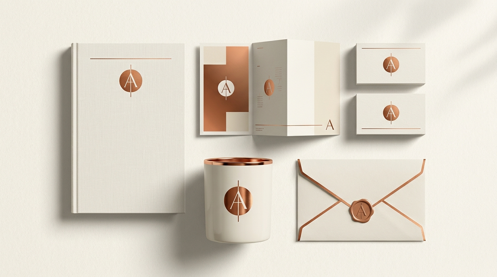
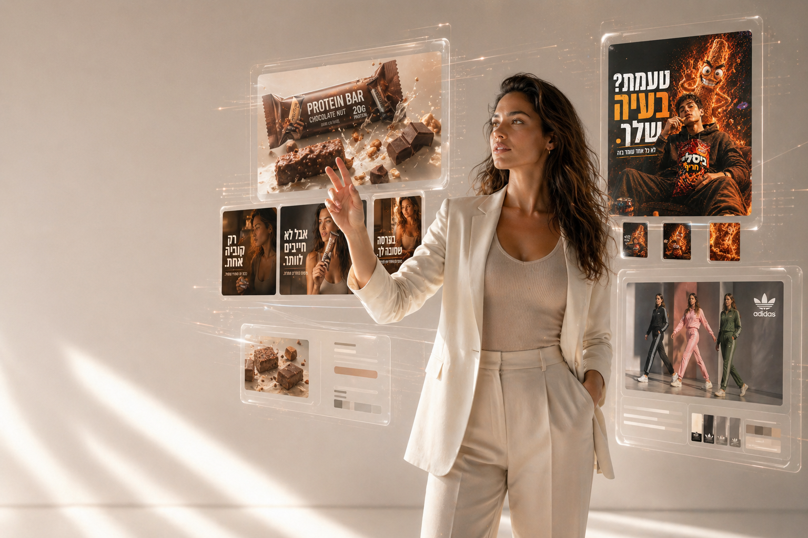
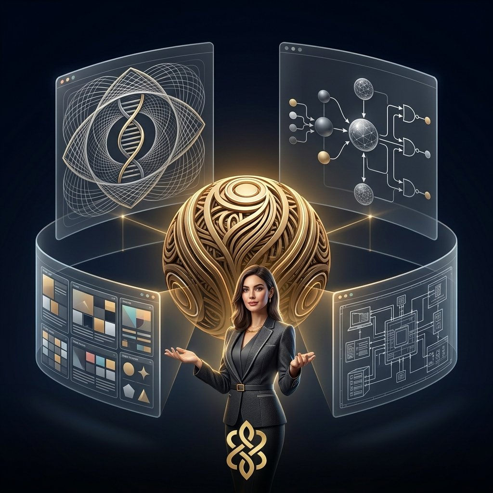
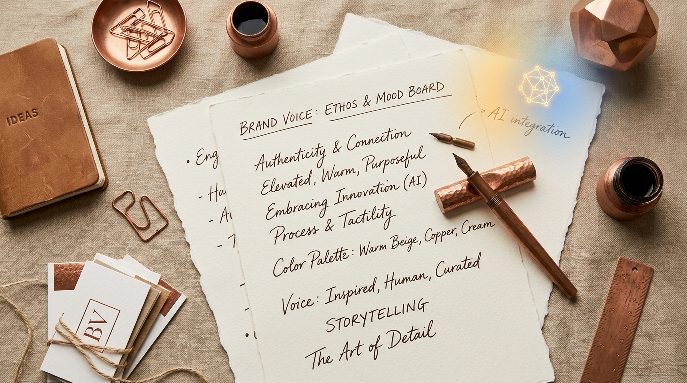
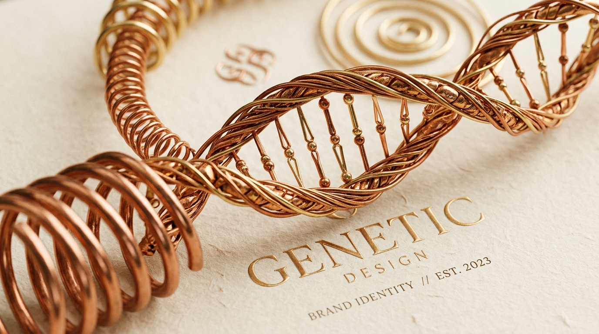

AI Strategy · BrandOS
מותג אישי בעידן ה-AI: למה דווקא עכשיו הוא הנכס הכי חשוב שלך
AI הפך תוכן לאינסופי וזול — ולכן התוכן כבר לא הנכס. מה שנדיר עכשיו הוא זהות שמזהים. 4 הדברים ש-AI לא יכול להעתיק, ואיך הופכים מותג אישי למערכת.
AI Strategy · BrandOS
צ'אטבוט, אוטומציה או סוכן AI — מה ההבדל ומה העסק שלך צריך
כולם קוראים לזה "בוט", אבל אלה שלושה דברים שעולים כסף שונה. צ'אטבוט מגיב, אוטומציה מבצעת, סוכן AI מחליט ופועל — ומדריך החלטה מתי צריך כל אחד.
AI Strategy · BrandOS
למה העסק שלך לא מופיע ב-ChatGPT (ואיך לתקן את זה)
לקוחות כבר לא גוללים בגוגל — הם שואלים את ה-AI "מי הכי טוב ב...", ובתשובה יש מקום למעטים. 5 הסיבות שלא מופיעים, ההבדל בין SEO ל-GEO, ולמה בעברית זה חלון הזדמנות.
AI Strategy · BrandOS
AI טוב לא רק עושה מהר יותר — הוא משנה איפה נוצרת הבעיה
רוב העסקים שואלים "איך לעשות מהר יותר". אבל מהירות על תהליך שבור רק משמרת אותו. AI כאבחון, לא כאקמול — והמעבר ממענה לתכנון. שכבת ההחלטה שלפני ה-AI.
AI Strategy · BrandOS
מה יבוא במקום הכרטיס? 9 תעשיות שמשנות כיוון בעידן ה-AI
השאלה היא לא איזה כלי AI להוסיף, אלא מה במודל הישן עומד להיעלם — ומה יבוא במקומו. 9 תעשיות: מה נעלם, מה בא במקום, ומה תפקיד ה-AI.
AI Strategy · BrandOS
איך מלמדים AI לדבר בשפת המותג שלך
כל טקסט מ-AI נשמע אותו דבר כי המודל מדבר בקול הממוצע של האינטרנט. 4 השכבות של שפת מותג ש-AI חייב לקבל, השיטה להעביר אותן, ודוגמת לפני/אחרי שמראה את ההבדל.
AI Strategy · BrandOS
סטוריבורד אחד, שני עולמות מותג — והשיעור על סרטוני AI שאף אחד לא מדבר עליו
סרטון AI טוב נקבע בסטוריבורד, לא בג'נרציה. ניסוי חי עם Gemini Omni ומותג LUSHA בשני עולמות — והשיעור על שכבת ההחלטה שאף כלי לא עושה בשבילכם.
AI Strategy · BrandOS
Brand DNA כסקיל ראשון: מהמסמך ל-AI שמדבר בקולכם
יש לכם מסמך Brand DNA, והוא במגירה. ב-AI הוא לא קיים. מדריך מעשי להפיכתו לסקיל שנטען אוטומטית בכל שיחה — אנטומיה, דוגמה מהשטח, ו-5 הטעויות הנפוצות.
AI Strategy · BrandOS
אוטומציות מותגיות: 5 מקומות שבהם AI סוף-סוף עובד בקול שלכם
רוב האוטומציות AI יוצרות תוכן גנרי. 3 התנאים לאוטומציה בקול המותג, 5 מקומות קונקרטיים שזה עובד היום, ו-3 מקומות שבהם AI עדיין לא יכול להחליף אתכם.

מיתוג ואסטרטגיה · פילר
מה זה מיתוג עסקי — והמדריך המלא לבניית מותג שעובד ב-2026
מיתוג עסקי הוא לא לוגו, לא צבע, לא טון — זו מערכת הפעלה לעסק. מדריך שמסביר את 5 המרכיבים של זהות מותגית ולמה כל עסק קטן צריך מערכת ולא דוקומנט.

AI ותוכן
יצירת תוכן עם GPT: איך לגרום ל-AI לכתוב בשפה של המותג שלכם
אותו GPT יכול לכתוב כמו קליניקת ביוטי שקטה, מותג פופ צעיר או חברת B2B טכנולוגית. ההבדל נמצא ב-Brand DNA שמזינים לפני הכתיבה.

AI ותוכן ויזואלי
תמונות AI בעברית: כשהטקסט הופך לחלק מהשפה הוויזואלית של המותג
לא רק עברית קריאה בתוך תמונה — אלא טיפוגרפיה עברית מעוצבת כחלק ממערכת מותגית: פופ קולאז', פרימיום, UI וטקסט רגשי.
AI ומיתוג
Claude Skills למיתוג: איך לשמור על שפה, טון ועיצוב של המותג בכל שיחה עם AI
AI גנרי לא יכול לשמור על מותג עקבי. Claude Skills פותרים את זה דרך 4 סקילים מותגיים שנטענים אוטומטית: Brand DNA, קול וטון, זהות חזותית, ובודק תוכן.
AI Strategy · פילר
AI לעסקים קטנים בישראל 2026: ארכיטקטורה במקום עוד כלי
39% מהעסקים בישראל משתמשים ב-AI, רוב התוכן נראה אותו דבר. מדריך אסטרטגי: שלוש שכבות, Claude for Small Business, ומה לבנות החודש.
AI Strategy
Claude Skills ו-Agents: ההבדל ולמה ב-2026 העסק שלכם צריך את שניהם
Skill הוא הזיכרון, Agent הוא היד. עסק שמשתמש רק באחד מהם מקבל אוטומציה חצי-עובדת. עסק שמשתמש בשניהם — בונה AI שמדבר בקול שלו.
AI & פרודקטיביות
סקילים ל-Claude Code בעברית: מדריך מ-0 לסקיל הראשון
מדריך צעד אחר צעד לבניית סקיל ראשון ל-Claude Code — כולל דוגמת SKILL.md מלאה בעברית ו-5 הטעויות שעוצרות סקילים מלהיטען.
AI & פרודקטיביות
בניית Claude Skill לקרוסלות בעברית: למה עברתי מ-AI image ל-HTML/CSS
הסקיל הראשון שלי לקרוסלות עבד עם API של AI image וייצר עברית עם שגיאות. הסקיל החדש מפריד תפקידים: AI לרקע, HTML לטיפוגרפיה. רנדור 100% מדויק.
AI & פרודקטיביות
Claude Skills בעברית: איך בניתי צוות של 6 מומחים בתוך קלוד
סקילים זה לא Feature — זו תפיסת עבודה. מדריך מעשי לבניית צוות AI לעסק שלכם, עם case study אמיתי מהשטח.

AI & תוכן ויזואלי
ChatGPT Images 2.0 כותב סוף סוף עברית — 5 קמפיינים אמיתיים
המודל החדש של OpenAI שובר את החומה האחרונה של AI ויזואלי בישראל. ניתחתי 5 קמפיינים פרסומיים שיצרתי בו בשעה אחת.

BrandOS
המותג שלך כ-OS: האדריכלות הפנימית שמאפשרת יצירה אינסופית
כמו מערכת הפעלה חכמה, מותג בנוי היטב מכתיב את חוקי העולם שלו. על Core DNA, מנוע נרטיב, עולם ויזואלי — והיצירה שמתחילה ב-80% מוכנה.

AI & תוכן
איך ליצור תוכן ממותג עם AI — המדריך המלא
תוכן AI שנשמע כמוכם — לא כמו כולם. הסוד הוא לא הכלי, אלא ה-DNA שמוכנס לתוכו.
Brand Strategy
מה זה Brand DNA — ולמה כל עסק צריך אחד
לוגו זה לא מותג. DNA הוא מה שגורם ללקוחות לזהות אתכם לפני שהם קוראים את השם.
כלי AI
כלי AI לשיווק — למה ChatGPT לבד לא מספיק
ChatGPT מצוין. Canva מצוין. ביחד — עדיין לא בונים מותג עקבי. הנה למה, ואיך פותרים.
AI & Branding
AI לא יחליף מעצבים — אבל מעצב עם AI ישנה הכל
על השילוב בין אינטואיציה אנושית לכוח של בינה מלאכותית בבניית עולמות מותג.

BrandOS
למי מערכת הפעלה למותגים מתאימה?
מערכת הפעלה למותגים מתאימה במיוחד לעסקים שמרגישים פער בין מי שהם לבין התוכן שהם מפרסמים.

Brand Strategy
Brand DNA: למה מותגים שמתחילים מעיצוב — נכשלים
רוב המותגים מתחילים מלוגו. ואז תוהים למה הכל לא מרגיש אחיד. הבעיה? הם דילגו על ה-DNA.
Manifesto
סוף עידן השירותים. ברוכים הבאים לעידן העולמות.
אנשים הפסיקו לקנות עיצוב. הם קונים כרטיס כניסה למציאות שהם חולמים להיות חלק ממנה.